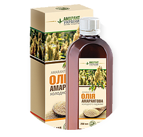
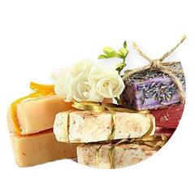
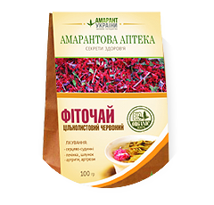
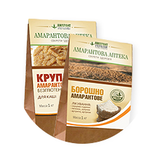

Амарант — здоровье, красота, долголетие
Комплекс активных компонентов делает продукцию из амаранта очень эффективным природным средством профилактики и лечения заболеваний:
- сердечно-сосудистых;
- онкологических;
- диабета и нарушения обмена веществ;
- гинекологических;
- желудочно-кишечного тракта;
- дерматологических, термических и солнечных ожогов.
Также омолаживает кожные покровы лица и тела, восстанавливает и укрепляет иммунную и гормональную системы.
Что такое амарант?
Амарант в течение 8 тысяч лет был одной из основных зерновых культур Южной Америки и Мексики («пшеница ацтекоtв», «хлеб инков»), наряду с бобами и кукурузой. После испанского завоевания Америки эта культура была забыта. В Азии амарант популярен среди горных племён Индии, Пакистана, Непала и Китая как зерновая и овощная культура (см. амарантовая крупа ). Молодые листья амаранта похожи на шпинат и используются в свежем виде и для приготовления горячих блюд. В пищу используют также и высушенные листья. Амарант имеет значение как кормовая культура — многие культурные виды годятся на зерно, выпас, зелёную подкормку и силос.
-
 250 млТоп продаж
250 млТоп продаж
Почему нас выбирают клиенты
- предлагаем комплекс уникальных по своим целебным свойствам продуктов;
- производство экологически чистой продукции;
- сертифицированная продукция;
- репутация компании;
- быстрая доставка;
- удобная оплата.
-

амарантовое масло
-

косметика из амаранта
-
в подарок
Фиточай из амаранта
-
амарантовое масло
-

Амарантовая мука и крупа
-
в подарок
Косметика из амаранта
Отзывы наших покупателей
-
Светлана
Я делаю маску для лица с маслом амаранта и томатным соком. Для нее надо развести столовую ложку крахмала соком так, чтобы вышло густое пюре, и добавить туда чайную ложку масла. Для жирной кожи то, что нужно! Делаю два раза в неделю. Цвет лица стал заметно лучше, кожа не так блестит, поры стянулись.
-
Степан
Подтверждаю, прекрасное масло. Правда, я пока не использовала для лица чистое, но покупала готовые маски с добавлением амаранта. Мне очень подошли, результат радует. Могу представить, какой эффект дает стопроцентное масло. Вот, пожалуй, и все, что нужно знать о масле амаранта. Желаем вам удачи.
-
ИРИНА
Какое замечательное маслице! У меня слабость ко всему натуральному, давно пользуюсь персиковым маслом для лица и оливковым – для тела. Теперь в моей коллекции появится и амарантовое. Уже не терпится увидеть в зеркале эффект от его применения. Думаю, его, как и любое другое, можно использовать в чистом виде.
-
ИВАН
Неужели такое масло действительно спасает от растяжек? Я где-то слышал, что при регулярном массаже с натуральными маслами их можно уменьшить, однако сам ни разу не пробовал, так как не было нужды. Поэтому и не знаю, какое именно масло лучше. Но вот после похудения недавно обнаружил.
Как заказать продукцию из амаранта?
- Позвоните по тел. +380 96 3444438 или заполните контактную форму для того, чтобы мы могли связаться с вами, указав номер телефона или e-mail.
- Обсудите с продавцом-консультантом детали заказа (товар, способы оплаты и доставки).
- Ожидайте ваш заказ. Доставим в кратчайшие сроки.